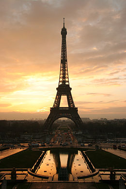

Култура на Деня
Айфеловата кула е метална решетъчна кула с височина 324 m (заедно с антените, приблизително колкото 81-етажна сграда), издигната в северозападния край на парка „Марсово поле“ в Париж, край река Сена, в 7-ми арондисман.

Продължи към сайта ->
Аз съм Хакер
Глфпгдлфгпдфгс :*